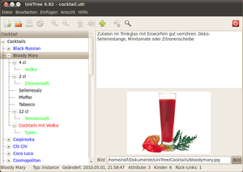

UniTree
Archivierte Anleitung
Dieser Artikel wurde archiviert, da er - oder Teile daraus - nur noch unter einer älteren Ubuntu-Version nutzbar ist. Diese Anleitung wird vom Wiki-Team weder auf Richtigkeit überprüft noch anderweitig gepflegt. Zusätzlich wurde der Artikel für weitere Änderungen gesperrt.
Zum Verständnis dieses Artikels sind folgende Seiten hilfreich:
UniTree ist ein universelles Werkzeug zur strukturierten Ablage von Textinformationen (Gliederungseditor oder Outliner). Es eignet sich für vielfältige Einsatzzwecke wie z.B. zur Ideensammlung, als Notizblock, für kleinere Datensammlungen, Verwaltung von Projekten, Hilfe Sammlung usw. UniTree läuft auf allen Plattformen, die Python 2.6 und GTK unterstützen.
Zu den Funktionen von UniTree gehören:
Strukturierter Baum mit Verweisen und Rück-Verweisen
Texteditor mit Einrück- und Aufzählungs-Automatik
Zusatzfelder (Langtext, Kurztext, Datum, Boolean, Liste, Links, Bildern)
Baumsuche, Volltext-Suche, Verweis-Suche
Journal 
Automatische Schlagwort-Verlinkung
Wortergänzung und Textbausteine auf Tastendruck
Liste der zuletzt bearbeiteten Themen
Autosave
Import und Export im XML-Format (mit XSL-Formatierung)
Drucken, Druckvorschau, als PDF-Datei drucken
UniTree wird nicht mehr weiterentwickelt. Es gibt eine letzte Version für Ubuntu 12.04. Der Nachfolger von UniTree ist Nota, bei dem das Konzept von UniTree vereinfacht wurde. Bestehende UniTree-Dateien können in Nota importiert werden.
Installation¶
UniTree ist kein Bestandteil der offiziellen Paketquellen.
PPA¶
Zur Installation bietet der Entwickler ein "Personal Package Archiv" (PPA) [1] an.
Adresszeile zum Hinzufügen des PPAs:
ppa:ralf.hersel/rhersel-ppa
Hinweis!
Zusätzliche Fremdquellen können das System gefährden.
Ein PPA unterstützt nicht zwangsläufig alle Ubuntu-Versionen. Weitere Informationen sind der  PPA-Beschreibung des Eigentümers/Teams ralf.hersel zu entnehmen.
PPA-Beschreibung des Eigentümers/Teams ralf.hersel zu entnehmen.
Damit Pakete aus dem PPA genutzt werden können, müssen die Paketquellen neu eingelesen werden.
Nach dem Aktualisieren der Paketquellen kann das folgende Paket installiert [2] werden:
unitree (ppa)
 mit apturl
mit apturl
Paketliste zum Kopieren:
sudo apt-get install unitree
sudo aptitude install unitree
Für ältere Ubuntu-Versionen kann man das Einzelpaket manuell herunterladen und installieren [3].
Bedienung¶
Das Programm bietet eine umfangreiche Hilfe, die mit Beispielen die Bedienung von UniTree erklärt. Beim ersten Starten des Programms öffnet sich die Hilfedatei, in der auch Beispiele enthalten sind.
 - Blogbeitrag 05/2009
- Blogbeitrag 05/2009- Erstellt mit Inyoka
-
 2004 – 2017 ubuntuusers.de • Einige Rechte vorbehalten
2004 – 2017 ubuntuusers.de • Einige Rechte vorbehalten
Lizenz • Kontakt • Datenschutz • Impressum • Serverstatus -
Serverhousing gespendet von